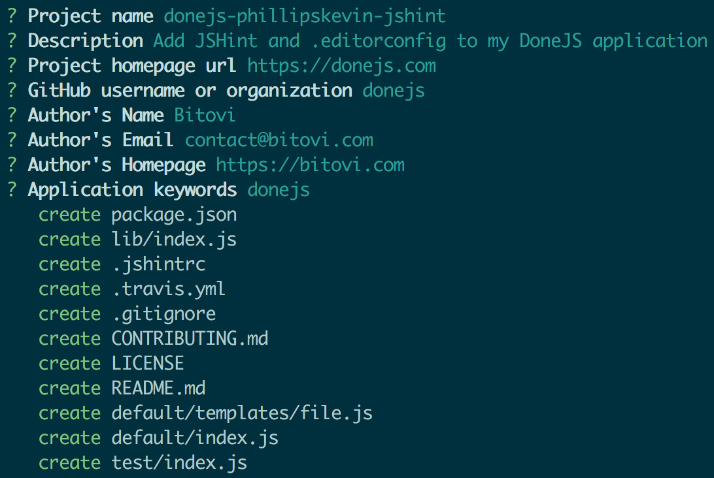

Creating a generator
generator
Generators add additional functionality to DoneJS applications. In this guide, we’ll create a generator that adds JSHint and a .editorconfig file to a DoneJS application.
Generators add additional functionality to DoneJS applications. In this guide, we’ll create a generator that adds JSHint and a .editorconfig file to a DoneJS application.
If you have used
donejs add nwordonejs add cordovato create a desktop or mobile version of your application you already used a DoneJS generator. Generators are npm modules that provide a Yeoman generator that adds functionality to your application.In this guide you will create your own version of donejs-jshint, a DoneJS generator that adds:
It will also update the
npm testscript to run JSHint with our tests. You can find the code in the donejs-jshint repository. We can run the generator with:Currently it will only ask if we want to use spaces or tabs and to overwrite the
package.jsonto add the npm scripts for JSHint:Setting up
Creating the project on GitHub
We will use GitHub to host the code for the project which makes it easy for others to contribute and to automatically run the tests in continuous integration which we will enable later.
If you don't have an account yet, go to GitHub to sign up and follow the help on how to set it up for the command-line
git. Once completed, create a new repository from your dashboard.Calling the repository
donejs-<username>-jshintand initializing it empty (without any of the default files) looks like this:After creating the repository, clone it into a new folder:
Initializing the project
To initialize a new generator you will need DoneJS version 0.9.0+ installed globally. To check your DoneJS version run
To install DoneJS or to get the latest version run:
In the
donejs-<username>-jshintfolder we can now initialize a new generator, very similar to a new DoneJS application, like this:The generator will ask several question that should be answered as follows:
Once all done, the final prompt looks similar to this:

Now the generator will initialize the default layout and install all its dependencies.
Setting up Travis CI
When the installation has completed, make sure everything got set up properly by running:
This will run some basic generator tests and output the result on the console.
This command can also be used to automatically run the tests on a continuous integration server. There are many open source CI servers, the most popular being Jenkins, and many hosted solutions like Travis CI.
We will use Travis CI as our hosted solution because it is free for open source projects. It works with your GitHub account which it will use to sign up. Once signed in, go to
Accounts(in the dropdown under you name) to enable thedonejs-<username>-jshintrepository:You may have to click the "Sync account" button for the repository to show up. Now, every time we push to GitHub the tests will run automatically. We can do so with our initial commit:
If you now go
https://travis-ci.org/<your-username>/donejs-<username>-jshint/buildsyou will see the build running and eventually turn green (which will update the badge that got added in thereadme.mdfile).Adding the configuration files
Now we can add the files that our generator should produce. All file templates will be put in the
default/templates/folder..jshintrc
First, add a
default/templates/.jshintrcfile which contains options for JSHint:.editorconfig
Next add a
default/templates/.editorconfigfile like this:All files support EJS placeholders. Here,
<%= indent_style %>will be used for the user choice of using whitespaces or tabs. Finally, removedefaults/templates/file.jssince we won't be using it.Implementing the generator
For the most part, DoneJS generators are simply Yeoman generators so everything documented for writing your own Yeoman generator also applies here. For the user choice of tabs vs. spaces also refer to the chapter about interacting with the user.
Adding the generator functionality
Our generator needs to ask if we want to use spaces or tabs and then copy the
.jshintrcand.editorconfigfiles over to their final destination. We also want to add annpm run jshintscript to thepackage.jsonand make sure that JSHint runs duringnpm test. The complete generator atdefault/index.jslooks like this:That's it. Now we have a fully functional generator and can give it a try in a DoneJS application.
Manual testing
When running
donejs add <generatorname>DoneJS willdonejs-<generatorname>is installed locallydefault/index.jsIf we want to test our generator without publishing it to npm first we can link it instead. In the generator folder run:
Then go into your test DoneJS application directory:
Now we can run
Writing a unit test
Yeoman also comes with some tools for testing generators. The test we initially ran with
npm testmakes sure thatdefault/templates/file.jsgets written. Since we deleted that file, update the test attest/index.jsto verify that it wrote the files we want with the content we expect:Now we can see all tests passing when running:
Publishing the plugin
Making a pull request
Although we are working on the generator by ourselves for now, GitHub pull requests are a great way to keep track of our progress and to make sure that all tests are passing. In the plugin folder run:
And then create a new pull request by going to
https://github.com/<username>/donejs-<username>-jshintwhich will now show an option like this:Once you created the pull request, you will see a
Some checks haven’t completed yetmessage that will eventually turn green:Now you can click the "Merge pull request" button. Then in the console, checkout the master branch and pull down the latest changes with:
Publishing to npm
For others to be able to use your generator via
donejs add <generatorname>you have to publish it to npm. Create a new account and then log in viaSemantic versioning is a great way to communicate new features and breaking changes. The generated plugin already comes with the release scripts to publish new versions according to the
major.minor.patchschema. In our case to publish an initial version0.1.0we can runNow version
0.1.0of the generator is available and everybody can use it throughShow it off
Once you published your generator, let the world know about it. Tweet @donejs and post it in the DoneJS forums and the DoneJS chat. Those are also great places to get quick help with any questions.